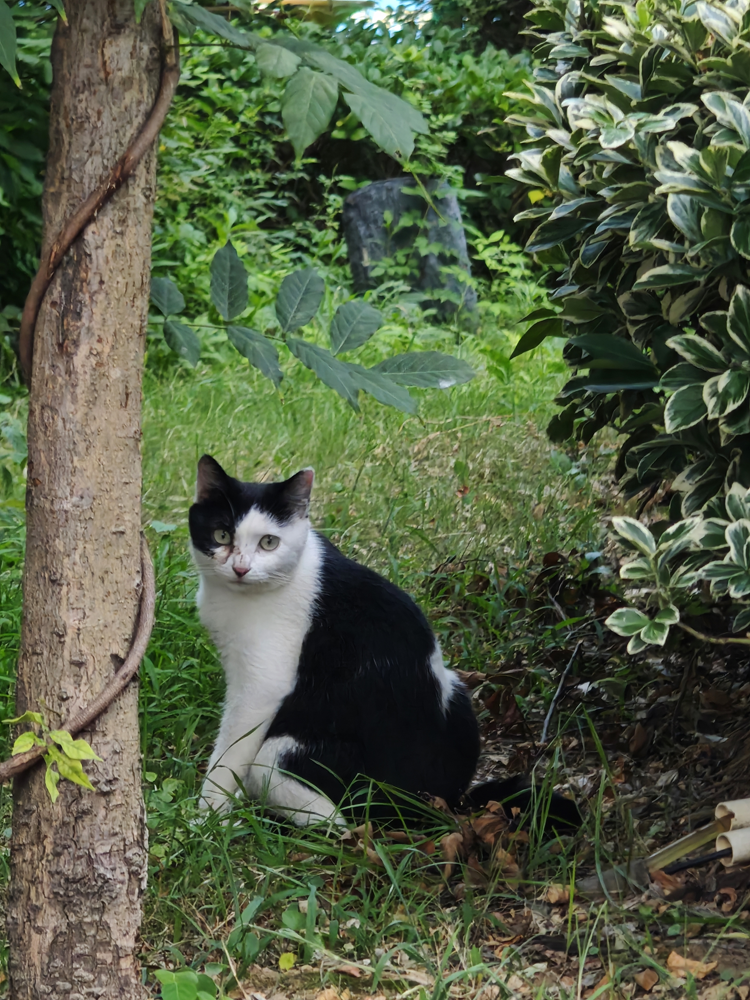
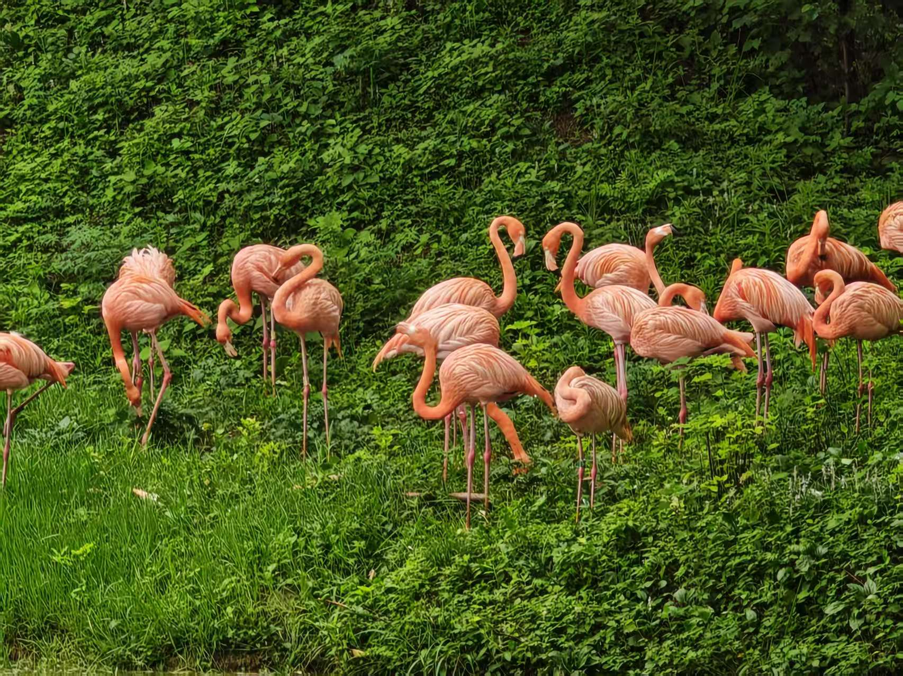
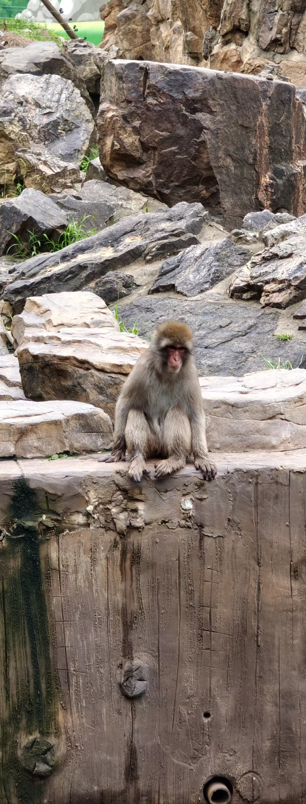
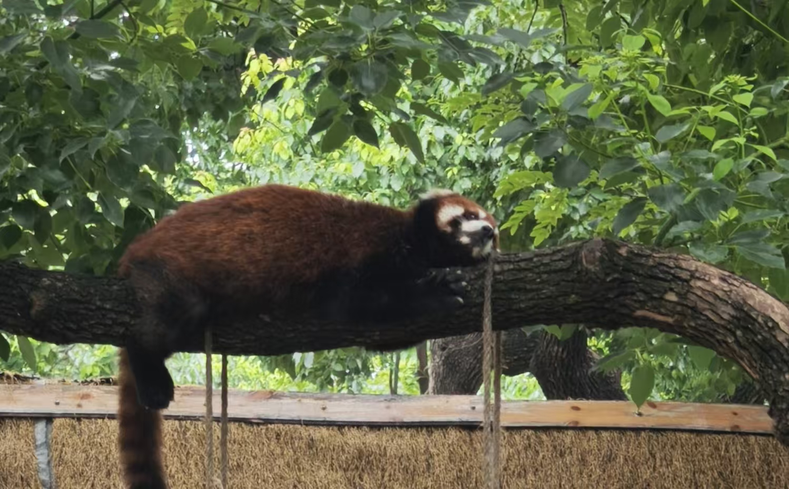
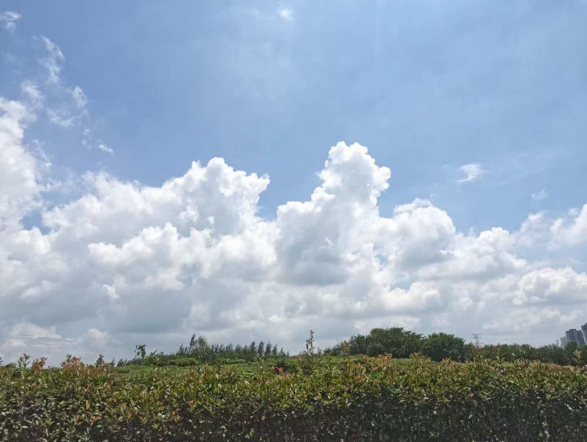

第一站
合肥
2026 · 夏末




夏末合肥：和四位毛孩子打了个照面
夏末去合肥的那天，太阳是晒的，一路却有树荫。逛着逛着见了四位毛孩子——奶牛猫懒懒地坐在阴凉，火烈鸟站成一片粉得耀眼，猕猴在坐着安静，小熊猫睡得笔直。
从南方小城出发，去触摸每一片从未见过的天空。
City Footprints · 从南方开始




夏末合肥：和四位毛孩子打了个照面
夏末去合肥的那天，太阳是晒的，一路却有树荫。逛着逛着见了四位毛孩子——奶牛猫懒懒地坐在阴凉，火烈鸟站成一片粉得耀眼，猕猴在坐着安静，小熊猫睡得笔直。

南京半日：红柱灰瓦和意外可爱的邂逅
去南京的那几天，阳光刚好。先逛了总统府——红柱灰瓦，屋檐挑得很高，走在院子里脚步自然就慢了。转出景区之后，又在街市上遇到了 Chiikawa，粉粉黄黄的小东西随处可见，忍不住停下来看了好一会儿。风里有时是老建筑的厚重感，有时是街角飘来的甜香，城市节奏不紧不慢，走累了就找个地方歇一歇。逛了一天，脚步停不下来，还没看够。